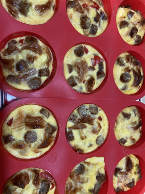

.png "Caring Kitchen Logo")
Egg Bites
Kays
Clean Eats shows us one of the million ways to save money and time by pre-making breakfast. It saves
money by stopping the drive-through on the way to work and saves time by cooking once and eating 6 to 12
times.

They can be cooked as muffins or in a tray for squares. They freeze and heat nicely from frozen.
